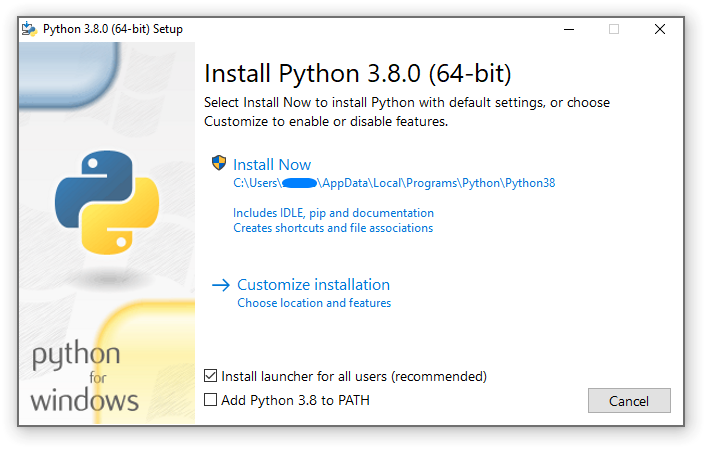

4. 윈도우에서 파이썬 사용하기¶
이 문서는 Microsoft 윈도우에서 파이썬을 사용할 때 알아야 할 윈도우 특정 동작에 대한 개요를 제공하는 것을 목표로 합니다.
대부분의 Unix 시스템 및 서비스와 달리, Windows에는 시스템 지원 파이썬 설치가 포함되어 있지 않습니다. 대신, CPython 팀으로부터 비롯한 다양한 배포판에서 파이썬을 얻을 수 있습니다. 각 파이썬 배포판은 고유한 장단점을 가지고 있지만, 사용하고 있는 다른 도구와의 일관성은 일반적으로 가치가 높은 이점입니다. 여기에 설명된 프로세스를 수행하기 전에, 기존에 사용하는 도구를 조사하여 파이썬을 직접 제공할 수 있는지 확인하는 것을 권장합니다.
CPython 팀으로부터 파이써ㄴ를 얻으려면 Python Install Manager를 사용하세요. 이 도구는 독립적인 도구로, Windows 컴퓨터에서 전역 명령어로 파이썬을 사용할 수 있게 하며 시스템과 통합되고 시간에 따라 업데이트를 지원합니다. Python Install Manager는 python.org/downloads 또는 Microsoft Store app (_)을 통해 다운로드할 수 있습니다.
Python Install Manager를 설치한 후에는 모든 터미널에서 전역 python 명령어를 사용하여 현재 최신 버전의 파이썬을 실행할 수 있습니다. 이 버전은 버전을 추가하거나 제거함에 따라 시간이 지남에 따라 변경될 수 있으며, py list 명령어로 현재 버전을 확인할 수 있습니다.
일반적으로 각 프로젝트마다 가상 환경 를 생성하고 터미널에서 <env>\Scripts\Activate 을 실행하여 사용하는 것을 권장합니다. 이는 프로젝트 간의 격리성을 제공하고, 시간 흐름에 따른 일관성을 보장하며, 패키지에서 추가하는 명령어도 세션 내에서 사용 가능하도록 합니다. python -m venv <env path> 를 사용하여 가상 환경을 생성하세요.
python 또는 py 명령어가 작동하지 않는 것 같다면, 아래의 문제 해결 섹션을 참조하십시오. PC를 구성하기 위해 때로는 추가적인 수동 단계가 필요할 수 있습니다.
Python Install Manager 사용 외에도, 파이썬은 NuGet 패키지 형태로도 얻을 수 있습니다. 이 패키지에 대한 자세한 내용은 아래 :ref:`windows-nuget`를 참조하십시오.
임베디드 배포판(embeddable distros)은 더 큰 애플리케이션에 내장하기에 적합한 파이썬의 최소 패키지입니다. Python Install Manager를 사용하여 설치할 수 있습니다. 이 패키지에 대한 자세한 내용은 아래 :ref:`windows-embeddable`을 참조하십시오.
4.1. Python Install Manager<br> 설치 관리자¶
4.1.1. 설치 방법¶
Python Install Manager는 Microsoft Store app (_)에서 설치하거나, python.org/downloads (_)에서 다운로드하여 설치할 수 있습니다. 두 버전은 동일합니다.
스토어를 통해 설치하려면 “설치”를 클릭하기만 하면 됩니다. 완료된 후, 터미널을 열고 `python`을 입력하여 시작하세요.
python.org에서 다운로드한 파일을 설치하려면, 두 번 클릭하여 “설치”를 선택하거나 Windows PowerShell에서 Add-AppxPackage <path to MSIX> `을 실행하십시오.
설치가 완료되면 python, py, 및 pymanager 명령어가 사용 가능해야 합니다. 파이썬의 기존 설치본이 있거나, PATH 변수를 수정했다면 제거하거나 수정을 되돌려야 할 수도 있습니다. 작동하지 않는 명령어 수정에 대한 자세한 도움말은 :ref:`pymanager-troubleshoot`을 참조하십시오.
런타임을 처음 설치할 때, 사용자에게 PATH`에 디렉터리를 추가하라는 메시지가 표시될 가능성이 높습니다. 이는 선택 사항이며 `py 명령어를 사용하고 싶다면 생략할 수 있지만, 전체 별칭 범위(예: python3.14.exe)를 사용할 수 있도록 제공됩니다. 기본적으로 이 디렉터리는 :file:`%LocalAppData%\Python\bin`입니다만, 관리자에 의해 사용자 지정될 수 있습니다. 시작 버튼을 클릭하고 “계정용 환경 변수 편집”을 검색하여 시스템 설정 페이지에서 경로를 추가하세요.
설치하는 각 파이썬 런타임은 스크립트를 위한 자체 디렉터리를 가집니다. 이 역시 사용하려면 :envvar:`PATH`에 추가해야 합니다.
Python Install Manager는 새 릴리스로 자동으로 업데이트됩니다. 이는 파이썬 런타임의 설치본에는 영향을 미치지 않습니다. Python Install Manager를 제거한다고 해서 모든 파이썬 런타임이 제거되는 것은 아닙니다.
상황에 따라 MSIX를 설치할 수 없는 경우(예: 지원하지 않는 자동 배포 소프트웨어를 사용하거나 Windows Server 2019용으로 목표하는 경우), 자세한 정보는 아래 :ref:`pymanager-advancedinstall`을 참조하십시오.
4.1.2. 기본 사용법¶
파이썬을 실행하는 권장 명령어는 python 입니다. 이는 스크립트에서 요청한 버전, 활성 가상 환경 또는 기본 설치된 버전을 실행하거나, 다른 설정이 없는 한 가장 최신 안정화된 릴리스를 실행합니다. 특정 버전이 명시적으로 요청되지 않았고 런타임 자체가 전혀 설치되어 있지 않은 경우, 현재 최신 릴리스가 자동으로 설치됩니다.
여러 런타임 버전을 다루는 모든 시나리오에서 권장되는 명령어는 py 입니다. 이 명령어는 python 또는 이전 py.exe 런처를 대신하여 어느 곳에나 사용될 수 있습니다. 기본적으로, py 는 python 의 동작과 일치하지만, 특정 버전을 선택할 수 있는 명령줄 옵션과 설치 관리를 위한 하위 명령도 허용합니다. 자세한 내용은 아래에서 확인할 수 있습니다.
py 명령어는 이전 버전에서 이미 사용 중일 수 있으므로, 모호하지 않은 pymanager 명령어 또한 존재합니다. 파이썬 설치 관리자를 사용하려는 스크립팅 기반 설치의 경우, 기존 설치와의 충돌 가능성이 낮으므로 pymanager 를 사용하는 것을 고려해야 합니다. 두 명령어 간의 유일한 차이점은 인자 없이 실행할 때입니다. 이때 py 는 기본 인터프리터를 실행하는 반면, pymanager 는 도움말을 표시합니다 (pymanager exec ... 가 py ... 와 동일한 동작을 제공합니다).
이러한 명령어들 각각은 콘솔 창을 생성하지 않는 윈도우드 버전을 가지고 있습니다. 이들은 pyw, pythonw 및 pymanagerw``입니다. 또한 ``python 명령어와 유사하게 작동하는 python3 명령어도 포함되어 있습니다. 이는 일반 POSIX 명령어가 Windows에서 실수로 사용되는 것을 방지하기 위한 것이지만, 광범위하게 사용되거나 권장되도록 만들어진 것은 아닙니다.
기본 런타임을 실행하려면 python 또는 py 를 사용하여 해당 런타임에 전달하려는 인자(예: 스크립트 파일 또는 모듈)와 함께 실행합니다.
$> py
...
$> python my-script.py
...
$> py -m this
...
기본 런타임은 PYTHON_MANAGER_DEFAULT 환경 변수나 구성 파일을 이용하여 재정의할 수 있습니다. 구성 설정에 대한 정보는 :ref:`pymanager-config`를 참조하십시오.
To launch a specific runtime, the py command accepts a -V:<TAG> option.
This option must be specified before any others. The tag is part or all of the
identifier for the runtime; for those from the CPython team, it looks like the
version, potentially with the platform. For compatibility, the V: may be
omitted in cases where the tag refers to an official release and starts with
3.
$> py -V:3.14 ...
$> py -V:3-arm64 ...
다른 배포판의 런타임은 회사 (company) 정보를 함께 요구할 수도 있습니다. 이는 태그와 슬래시로 구분되어야 하며 접두사 역할을 할 수 있습니다. PythonCore 의 경우 회사 정보 지정은 선택 사항이며, 특정 회사에서 최신 릴리스를 원하는 경우 태그 지정은 선택 사항입니다 (하지만 슬래시는 필수).
$> py -V:Distributor\1.0 ...
$> py -V:distrib/ ...
버전이 지정되지 않았지만 스크립트 파일이 전달되면, 해당 스크립트는 셔뱅 라인 (shebang line)을 위해 검사됩니다. 이는 파일의 첫 번째 줄에 있는 특수 형식으로 명령어를 덮어쓸 수 있게 해줍니다. 더 많은 정보는 셔뱅 라인 를 참조하십시오. 셔뱅 라인이 없거나 해석할 수 없는 경우, 스크립트는 기본 런타임으로 실행됩니다.
활성 가상 환경에서 작업하며 특정 버전을 요청하지 않았고 셔뱅 라인도 없는 경우, 기본 런타임이 해당 가상 환경이 됩니다. 이 시나리오에서는 python 명령어가 이미 재정의되었을 가능성이 높으며 이러한 확인 절차는 수행되지 않았습니다. 하지만 이 동작은 py 명령어를 상호 교환적으로 사용할 수 있도록 보장합니다.
어떤 런타임도 설치되어 있지 않은 경우, 모든 실행 명령어는 요청된 버전을 설치하고 실행하려고 시도합니다. 그러나 일단 어떤 버전이 설치되면, 요청한 버전이 없는 경우 py exec ... 및 pymanager exec ... 명령만 설치를 수행합니다. 다른 형태의 명령어들은 오류를 표시하며 먼저 py install 을 사용하도록 안내할 것입니다.
4.1.3. 명령어 도움말¶
py help 명령어는 지원되는 모든 명령어 목록과 그 옵션을 표시합니다. 어떤 명령어든 -? 옵션을 인자로 전달하여 도움말을 표시할 수 있으며, 이 명령어 이름 자체를 py help 에 전달할 수도 있습니다.
$> py help
$> py help install
$> py install /?
모든 명령어는 공통 옵션들을 지원하며, 이는 py help 를 통해 확인할 수 있습니다. 이러한 옵션들은 하위 명령(subcommand) 뒤에 지정해야 합니다. -v 나 --verbose 를 지정하면 표시되는 출력량(output amount)이 증가하며, 디버깅 목적으로는 -vv 를 사용하면 더 많이 증가합니다. 또한, 출력을 줄이고 싶으면 -q 또는 --quiet 을 사용하여 출력을 감소시킬 수 있고, 더욱 줄일 때는 -qq 를 사용합니다.
--config=<PATH> 옵션은 설정을 한 번에 여러 곳에서 덮어쓸(override) 수 있는 구성 파일 지정이 가능합니다. 이 파일들에 대한 자세한 내용은 아래 :ref:`pymanager-config`를 참고하십시오.
4.1.4. 런타임 목록 보기¶
$> py list [-f=|--format=<FMT>] [-1|--one] [--online|-s=|--source=<URL>] [<TAG>...]
설치된 런타임 목록은 py list``를 사용하여 확인할 수 있습니다. 필터는 하나 이상의 태그(company 지정자 유무에 상관없음) 형태로 추가할 수 있으며, 각 태그는 범위를 제한하기 위해 ``<, <=, >= 또는 > 접두사를 포함할 수 있습니다.
A range of formats are supported, and can be passed as the --format=<FMT> or
-f <FMT> option. Formats include table (a user friendly table view),
csv (comma-separated table), json (a single JSON blob), jsonl (one
JSON blob per result), exe (just the executable path), prefix (just the
prefix path).
--one 또는 -1 옵션은 단일 결과만을 표시합니다. 기본 런타임이 포함된 경우, 그것이 기본값이 됩니다. 그렇지 않은 경우, “최적의” 결과가 표시됩니다 (“best”는 의도적으로 모호하게 정의되었지만, 일반적으로 가장 최근 버전일 것입니다). py list --one <TAG> `로 표시되는 결과는 ` py -V:<TAG>``로 실행될 런타임과 일치합니다.
--only-managed 옵션은 Python 설치 관리자에 의해 설치되지 않은 결과를 제외합니다. 이 것은 어떤 런타임을 py 명령을 통해 업데이트하거나 제거할 수 있는지 판단하는 데 유용합니다.
--online 옵션은 기본 소스를 가진 --source=<URL> `를 전달하는 것을 축약한 표현입니다. 이 두 옵션 중 어느 것을 사용하더라도, 설치 가능한 런타임을 온라인 인덱스에서 검색합니다. ` py list –online –one <TAG>``로 표시되는 결과는 ` py install <TAG>``에 의해 설치될 런타임과 일치합니다.
$> py list --online 3.14
오래된 런처와의 호환성을 위해, --list, --list-paths, -0 및 -0p 명령어(예: py -0p)가 유지됩니다. 이들은 추가 옵션을 허용하지 않으며 레거시 형식의 출력물을 생성할 것입니다.
4.1.5. 런타임 설치하기¶
$> py install [-s=|--source=<URL>] [-f|--force] [-u|--update] [--dry-run] [<TAG>...]
py install 을 사용하면 새 런타임 버전을 추가할 수 있습니다. 하나 이상의 태그를 지정할 수 있으며, 기본값을 선택하려면 특별한 태그 default 를 사용할 수도 있습니다. 설치에 대해서는 범위(ranges)가 지원되지 않습니다.
--source=<URL> 옵션은 런타임을 얻는 데 사용되는 온라인 인덱스를 덮어쓸 수 있게 합니다. 이는 :ref:`pymanager-offline`에서 보여주듯이 오프라인 인덱스와 함께 사용할 수도 있습니다.
--force 를 전달하면 캐시된 파일은 무시하고 기존 설치를 제거한 후 지정된 것으로 대체합니다.
--update 를 전달하면 새 버전이 더 최신인 경우 기존 설치를 덮어씁니다. 그렇지 않은 경우에는 그대로 둡니다. 만약 --update 에 태그가 제공되지 않으면, 파이썬 설치 관리자가 관리하는 모든 설치본 중에서 더 새로운 버전이 사용 가능하다면 업데이트됩니다. 업데이트는 전역으로 설치된 패키지를 포함하여 설치에 가해진 모든 수정을 제거하지만, 가상 환경은 계속 작동합니다.
--dry-run 을 전달하면 출력과 로그는 생성되지만, 어떤 설치도 수정하지 않습니다.
--refresh``를 전달하면 설치된 모든 런타임에 대한 등록 정보가 업데이트됩니다. 이는 시작 메뉴 바로가기, 레지스트리 키, 그리고 전역 별칭(예: ``python3.14.exe 또는 설치된 스크립트의 경우)을 재구성합니다. 이러한 항목들은 런타임 설치 시 자동으로 새로 고쳐지지만, 패키지를 설치한 후에는 수동으로 새로 고침이 필요할 수 있습니다.
위에 제시된 옵션 외에도, --target 옵션을 사용하면 일반 설치 대신 런타임을 지정된 디렉터리에 추출할 수 있습니다. 이는 더 큰 애플리케이션에 런타임을 임베딩하는 데 유용합니다. 일반 설치와 달리, py`는 추출된 런타임을 인식하지 못하며, 시작 메뉴나 다른 바로가기는 생성되지 않습니다. 런타임을 실행하려면 대상 디렉터리에서 메인 실행 파일(일반적으로 ``python.exe`)을 직접 실행해야 합니다.
$> py install ... [-t=|--target=<PATH>] <TAG>
py exec 명령어는 요청된 런타임이 이미 존재하지 않는 경우 설치합니다. 이는 automatic_install 구성(PYTHON_MANAGER_AUTOMATIC_INSTALL)에 의해 제어되며 기본적으로 활성화되어 있습니다. 사용할 런타임 자체가 없을 경우, 설정이 허용하는 모든 실행 명령은 자동 설치를 수행하게 됩니다. 이는 신규 사용자에게 좋은 경험을 제공하기 위함이지만, py exec 명령어 또는 명시적 설치 명령을 사용하는 것이 일반적이므로 전적으로 의존해서는 안 됩니다.
4.1.6. 오프라인 설치¶
Python의 오프라인 설치를 수행하려면, 네트워크 액세스가 가능한 머신에서 먼저 오프라인 인덱스를 생성해야 합니다.
$> py install --download=<PATH> ... <TAG>...
--download=<PATH> 옵션은 나열된 태그에 대한 패키지를 다운로드하여, 추후 설치에 적합한 index.json 파일이 포함된 디렉터리를 생성합니다. 이 전체 디렉터리는 오프라인 머신으로 이동하여 번들링 된 하나 이상의 런타임을 설치하는 데 사용할 수 있습니다:
$> py install --source="<PATH>\index.json" <TAG>...
Python 설치 관리자는 설치 프로그램을 다운로드하여 다른 머신으로 옮긴 후 설치함으로써 구성할 수 있습니다.
대안으로, 오프라인 인덱스 디렉터리에 있는 ZIP 파일을 단순히 다른 머신으로 전송하고 압축을 풀 수 있습니다. 이렇게 하면 어떤 식으로도 설치가 등록되지 않으며, 따라서 추출된 디렉터리의 실행 파일들을 직접 참조하여 실행해야 합니다. 하지만 Python 설치 관리자를 설치할 수 없거나 번거로운 경우에 때로는 선호되는 접근 방식입니다.
이 방식으로, 인터넷 액세스가 불가능한 머신에서도 파이썬 런타임을 설치하고 관리할 수 있습니다.
4.1.7. 런타임 제거¶
$> py uninstall [-y|--yes] <TAG>...
런타임은 py uninstall 명령어를 사용하여 제거할 수 있습니다. 하나 이상의 태그를 지정해야 합니다. 범위는 여기서 지원되지 않습니다.
–yes 옵션은 제거 전에 확인 프롬프트를 건너<0xEB><0x9C><0x81>니다.
태그를 개별적으로 전달하는 대신, --purge 옵션을 지정할 수 있습니다. 이는 시작 메뉴, 레지스트리 및 모든 다운로드 캐시를 정리하는 것을 포함하여 Python 설치 관리자가 관리하는 모든 런타임을 제거합니다. Python 설치 관리자에 의해 설치되지 않은 런타임이나 수동으로 생성된 구성 파일은 영향을 받지 않습니다.
$> py uninstall [-y|--yes] --purge
Python 설치 관리자는 Windows의 “설치된 앱” 설정 페이지를 통해 제거할 수 있습니다. 이것은 어떤 런타임도 제거하지 않으며 여전히 사용 가능하지만, 전역 python 및 py 명령어는 제거됩니다. Python 설치 관리자를 다시 설치하면 이 런타임들을 다시 관리할 수 있게 됩니다. 모든 Python 런타임을 완전히 정리하려면, Python 설치 관리자를 제거하기 전에 --purge 를 실행하십시오.
4.1.8. 구성¶
Python 설치 관리자는 구성 파일의 계층 구조, 환경 변수, 명령줄 옵션 및 레지스트리 설정을 사용하여 구성됩니다. 일반적으로 구성 파일은 다른 구성 파일의 위치를 포함하여 모든 것을 구성할 수 있는 능력을 가지고 있으며, 레지스트리 설정은 관리자 전용이며 구성 파일을 덮어씁니다. 명령줄 옵션이 다른 모든 설정을 덮어쓰지만, 사용 가능한 모든 옵션이 있는 것은 아닙니다.
이 섹션에서는 기본값을 설명하지만, 수정되거나 재정의된 설치는 설정을 다르게 해석할 수 있음을 유념하십시오.
관리자가 구성할 수 있는 전역 구성 파일이 있으며, 이 파일이 가장 먼저 읽힙니다. 사용자 구성 파일은 %AppData%\Python\pymanager.json`에 저장되어 있습니다 (이 위치는 ``Local``이 아닌 ``Roaming` 아래에 있습니다) 그리고 다음으로 읽히면서 이전 파일의 모든 설정을 덮어씁니다. 추가 구성 파일은 PYTHON_MANAGER_CONFIG 환경 변수 또는 –config 명령줄 옵션에서 지정할 수 있습니다 (둘 다는 안 됩니다). 이 위치들은 나중에 나열된 관리자 사용자 정의 옵션에 의해 수정될 수 있습니다.
다음 설정들은 일반적인 사용 중에 변경될 가능성이 있는 항목들입니다. 이후 섹션에서는 관리자 사용자 정의를 위한 의도된 옵션들을 나열합니다.
표준 구성 옵션
구성 키 |
환경 변수 |
설명 |
|---|---|---|
|
|
실행하거나 설치할 때 선호되는 기본 버전입니다. 기본적으로, 이는 CPython 팀의 가장 최근 비프리릴리스 버전을 의미합니다. |
|
|
실행하거나 설치할 때 선호되는 기본 플랫폼입니다. 이것은 지정된 태그에 대한 접미사로 처리되어, |
|
|
로그 파일이 작성되는 위치입니다. 기본적으로 :file:`%TEMP%`입니다. |
|
|
|
|
|
Python 설치 관리자에 의해 설치되지 않은 런타임 목록 작성 및 실행을 허용하면 `True`로, 제외하려면 `False`로 설정합니다. 기본값은 True입니다. |
|
|
|
|
(없음) |
셔뱅 라인 템플릿을 대체 명령, 예를 들어 |
|
|
출력의 기본 수준을 설정합니다 (0-50). 기본값은 20입니다. 값이 낮을수록 더 많은 출력을 생성합니다. 환경 변수는 부울형이며, 시작 시 추가적인 출력을 생성할 수 있지만 다른 구성에 의해 나중에 억제됩니다. |
|
|
취하기 전에 특정 작업을 확인하도록 허용하면 `True`로, 확인을 건너뛰려면 `False`로 설정합니다. 기본값은 True입니다. |
|
|
새로운 설치를 가져올 인덱스 피드를 재정의합니다. |
|
(없음) |
설치된 패키지에 대한 전역 명령(예: |
|
|
|
|
(없음) |
런타임이 설치될 루트 디렉터리를 지정합니다. 이 설정을 변경하면, 기존에 설치된 런타임들은 새 위치로 이동하지 않는 한 사용되지 않습니다. |
|
(없음) |
전역 명령(예: |
|
(없음) |
다운로드된 파일이 저장되는 디렉터리를 지정합니다. 이 디렉터리는 임시 캐시이며 가끔 정리할 수 있습니다. |
점 표기법 이름은 JSON 객체 내에 중첩되어야 합니다. 예를 들어, list.format 는 {"list": {"format": "table"}} 로 지정해야 합니다.
4.1.9. 셔뱅 라인¶
스크립트 파일의 첫 번째 줄이 #!``로 시작하면 "셔뱅(shebang)"줄이라고 합니다. 리눅스와 기타 유닉스 류 운영 체제는 이러한 줄을 기본적으로 지원하며 스크립트를 어떻게 실행해야 하는지를 나타내기 위해 이러한 시스템에서 일반적으로 사용됩니다. ``python 및 py 명령은 윈도우에서도 파이썬 스크립트에 동일한 기능을 사용할 수 있게 합니다.
Python 스크립트의 셔뱅 라인이 유닉스와 윈도우 간에 이식성을 가지도록 하려면, 어떤 인터프리터를 사용할지 지정하는 여러 ‘가상’ 명령이 지원됩니다. 지원되는 가상 명령은 다음과 같습니다:
/usr/bin/env <ALIAS>/usr/bin/env -S <ALIAS>/usr/bin/<ALIAS>/usr/local/bin/<ALIAS><ALIAS>
예를 들어, 스크립트의 첫 번째 줄이 다음과 같이 시작하면
#! /usr/bin/python
기본 파이썬이나 활성 가상 환경을 찾아서 사용합니다. 유닉스에서 작동하도록 작성된 많은 파이썬 스크립트에는 이미 이 줄이 있어서, 수정하지 않고도 이러한 스크립트를 런처에서 사용할 수 있습니다. 윈도우에서 유닉스에서 유용할 새 스크립트를 작성하면, /usr로 시작하는 셔뱅 줄 중 하나를 사용해야 합니다.
위에 언급된 가상 명령어들 중 어느 것이라도 <ALIAS> 를 설치된 런타임의 별칭으로 대체할 수 있습니다. 즉, 전역별칭 디렉터리(사용자가 PATH 환경 변수에 추가했을 수 있는)에서 생성된 모든 명령은 PATH 에 없더라도 셔뱅에서 사용될 수 있습니다. 이를 통해 /usr/bin/python3.12 와 같이 특정 런타임을 선택하는 데 사용할 수 있습니다.
러닝 타임이 설치되어 있지 않거나 자동 설치가 활성화된 경우, 필요한 경우 요청된 런타임이 설치됩니다. 구성 설정에 대한 정보는 :ref:`pymanager-config`를 참조하십시오.
Shebang 줄의 /usr/bin/env 형식은 인식되지 않은 명령을 찾기 위해 PATH 환경 변수도 검색합니다. 이는 동일한 검색을 수행하지만 알려진 Python 명령어 실행을 선호하는 유닉스 env 프로그램의 동작에 해당합니다. 임의의 실행 파일을 검색할 때 경고가 표시될 수 있으며, 이러한 검색은 shebang_can_run_anything 구성 옵션으로 비활성화할 수 있습니다.
어떤 패턴과도 일치하지 않는 셔뱅 줄은 스크립트 파일을 포함하는 디렉터리에 절대 경로이거나 상대 경로인 Windows 실행 파일 경로로 처리됩니다. 이는 설치 프로그램에 의해 생성되는 것과 같이 Windows 전용 스크립트를 위한 편의 기능으로, 이 동작은 Unix 스타일 셸과 호환되지 않기 때문입니다. 이러한 경로는 따옴표로 묶일 수 있으며 여러 인수를 포함할 수 있으며, 그 이후에는 스크립트 경로와 모든 추가 인수가 추가됩니다. 이 기능은 shebang_can_run_anything 구성 옵션에 의해 비활성화될 수 있습니다.
Python 설치 관리자 버전 26.3부터는 사용자 지정 셔뱅 템플릿을 구성 파일에 추가할 수 있습니다. 각 템플릿(일치시킬 문자열)과 템플릿이 일치했을 때 사용할 명령 하나를 포함하는 shebang_templates 객체를 추가하십시오. 대부분의 명령어는 설치된 런타임 중 하나를 시작하기 위해 py -V:<tag> (또는 pyw)여야 합니다. 기본을 실행하는 데 사용되는 일반적인 py``도 허용되며, ``py -3.<version> 형식 또한 허용됩니다. 다른 인수는 지원되지 않습니다.
{
"shebang_templates": {
"/usr/bin/python": "py",
"/usr/bin/my_custom_python": "py -V:MyCustomPython/3"
}
}
대체 명령이 py 또는 pyw 가 아닌 경우, 셔뱅에 다시 기록되고 일반 처리가 계속됩니다. 임의 실행 파일 실행이 허용된 경우, 전체 경로를 제공하면 Python에서 모든 실행 파일로 리디렉션할 수 있습니다. 템플릿은 전체 줄(앞뒤 공백 무시) 또는 셔뱅 줄의 첫 번째 공백 이전까지 일치해야 합니다.
참고
Python 설치 관리자에서 셔뱅의 동작 방식은 이전 py.exe 런처와 미묘하게 다르며, 이전 구성 옵션들은 더 이상 적용되지 않습니다. 만약 구형 동작이나 구성에 특별히 의존해야 하는 경우, legacy launcher 를 설치하는 것을 권장합니다. 레거시 런처의 py 명령어는 기본적으로 PyManager의 명령을 재정의하며, 설치 및 제거에는 반드시 pymanager 명령어를 사용해야 합니다.
4.1.10. 고급 설치¶
MSIX를 설치할 수 없는 상황 (예: 일부 이전 관리 배포 플랫폼)의 경우, python.org 다운로드 페이지에서 MSI를 사용할 수 있습니다. 이 MSI는 사용자 인터페이스가 없으며 Program Files의 기본 위치에만 장치별(per-machine) 설치를 수행할 수 있습니다. 시스템 PATH 환경 변수를 수정하여 이 설치 위치를 포함하려고 시도하지만, 사용자의 구성에서 이를 반드시 확인해야 합니다.
참고
Windows Server 2019는 CPython이 지원하며 MSIX를 지원하지 않는 유일한 Windows 버전입니다. Windows Server 2019의 경우, MSI를 사용해야 합니다.
MSI 패키지는 어떤 런타임도 번들로 제공하지 않으므로, 오프라인 설치 인덱스를 생성하지 않고는 오프라인 환경에 설치하는 데 적합하지다는 점을 유의하십시오. 이러한 시나리오를 처리하는 방법에 대한 정보는 오프라인 설치 및 :ref:`pymanager-admin-config`를 참조하십시오.
MSIX로 설치되는 런타임은 MSIX로 설치된 것과 공유되며 모두 사용자별입니다. Python 설치 관리자는 장치 전체에 런타임을 설치하는 것을 지원하지 않습니다. 장치 전체 설치를 에뮬레이션하려면, 관리자 권한으로 py install –target=<공유 위치> 를 사용하고 :envvar:`PATH, 레지스트리 또는 시작 메뉴에 자체 시스템 전체 수정 사항을 추가할 수 있습니다.
MSIX가 설치되지만, 명령어가 PATH 환경 변수에서 사용할 수 없는 경우, python.org를 통해 설치했는지 또는 Windows 스토어를 통해 설치했는지에 따라 %LocalAppData%\Microsoft\WindowsApps\PythonSoftwareFoundation.PythonManager_3847v3x7pw1km 또는 :file:`%LocalAppData%\Microsoft\WindowsApps\PythonSoftwareFoundation.PythonManager_qbz5n2kfra8p0`에서 찾을 수 있습니다. 프로그램 파일에서 실행 파일을 직접 실행하는 것은 권장되지 않습니다.
Python 설치 관리자를 프로그래밍 방식으로 설치하려면, 모든 지원되는 Windows 버전에 포함된 WinGet을 사용하는 것이 가장 쉽습니다:
$> winget install 9NQ7512CXL7T -e --accept-package-agreements --disable-interactivity
# 선택적으로 구성 검사기를 실행하고 모든 변경 사항을 수락합니다.
$> py install --configure -y
Python 설치 관리자를 다운로드하여 다른 장치에 설치하려면, 다음 WinGet 명령이 Store에서 필요한 파일을 사용자의 Downloads 디렉터리에 다운로드할 것입니다 (출력 위치를 사용자 정의하려면 -d <위치> `를 추가하십시오). 이는 또한 불필요한 것으로 보이는 YAML 파일을 생성하며, 다운로드된 MSIX는 아래의 명령어 실행을 통해 설치할 수 있습니다.
$> winget download 9NQ7512CXL7T -e --skip-license --accept-package-agreements --accept-source-agreements
PowerShell만을 사용하여 MSIX를 프로그래밍 방식으로 설치하거나 제거하려면, Add-AppxPackage 및 Remove-AppxPackage PowerShell cmdlet을 사용하는 것이 좋습니다:
$> Add-AppxPackage C:\Downloads\python-manager-25.0.msix
...
$> Get-AppxPackage PythonSoftwareFoundation.PythonManager | Remove-AppxPackage
최신 릴리스는 AppInstaller 파일을 Add-AppxPackage 명령어에 전달하여 Windows에 다운로드하고 설치할 수 있습니다. 이는 python.org의 MSIX를 사용하여 설치되며, Store(대화형 또는 WinGet을 사용한)를 통해 설치하는 것이 불가능한 경우에만 권장됩니다.
$> Add-AppxPackage -AppInstallerFile https://www.python.org/ftp/python/pymanager/pymanager.appinstaller
장치용 모든 사용자에게 MSIX 패키지를 제공하기 위해 다른 도구 및 API를 사용할 수도 있지만, Python은 이를 지원되는 시나리오로 간주하지 않습니다. PowerShell의 Add-AppxProvisionedPackage cmdlet, 네이티브 Windows PackageManager 클래스 또는 배포 도구에 대한 문서와 지원을 확인하는 것을 제안합니다.
설치 방법에 관계없이, 사용자는 여전히 Python 자체의 복사본을 설치해야 합니다. 로그인한 사용자여야만 이러한 설치를 트리거할 방법이 없기 때문입니다. MSIX를 사용하는 경우, 최신 버전의 Python은 네트워크 액세스 없이 모든 사용자가 설치할 수 있습니다.
Store에서 다운로드한 MSIX와 Python 웹사이트에서 다운로드한 MSIX는 미묘하게 다르며 동시에 설치할 수 없습니다. 가능한 경우, 충돌하는 설치 설정을 방지하기 위해 위의 WinGet 명령을 사용하여 Store에서 패키지를 다운로드할 것을 권장합니다. 이 방식으로 Store 패키지를 사용하는 것을 막을 라이선스 제한은 Python 설치 관리자에 없습니다.
4.1.11. 관리자 구성¶
관리자가 Python 설치 관리자의 구성을 재정의하는 데 유용할 수 있는 여러 옵션이 있습니다. 이러한 옵션을 사용하여 로컬 캐싱을 제공하거나, 특정 바로 가기 유형을 비활성화하거나, 번들된 콘텐츠를 재정의할 수 있습니다. 위에 설명된 모든 구성 옵션과 아래 옵션들도 설정될 수 있습니다.
구성 옵션은 HKEY_LOCAL_MACHINE\Software\Policies\Python\PyManager 아래에 값을 설정함으로써 레지스트리에서 재정의될 수 있으며, 여기서 값 이름은 구성 키와 일치하고 값 유형은 REG_SZ 입니다. 참고로 이 키 자체도 사용자 지정할 수 있지만 Python 설치 관리자와 함께 배포된 코어 구성 파일을 수정해야만 할 수 있습니다. 그러나 레지스트리 값은 전체 재정의 세트를 포함하는 JSON 파일에 base_config 를 설정하는 용도로만 사용하실 것을 권장합니다. 레지스트리 키 재정의는 다른 모든 구성 설정을 대체하며, 반면에 base_config 는 사용자가 추가로 수정해야 하는 설정을 허용합니다.
환경 변수를 가진 대부분의 설정은 기본 설정이 해당 변수를 지정하기 때문에 해당 변수를 지원한다는 점에 유의하십시오. 이를 재정의할 경우, 다른 변수로 재정의하지 않는 한 환경 변수는 더 이상 작동하지 않습니다. 예를 들어, confirm 의 기본값은 문자 그대로 %PYTHON_MANAGER_CONFIRM% 이며, 이는 로드 시점에 변수를 해결합니다. 만약 이 값을 yes 로 재정의하면 환경 변수가 더 이상 사용되지 않습니다. 값이 %CONFIRM% 으로 재정의되면 그 대신 해당 환경 변수가 사용됩니다.
경로인 구성 설정은 해당 설정을 지정한 구성 파일이 포함된 디렉터리를 기준으로 상대 경로로 해석됩니다.
관리용 구성 옵션
구성 키 |
설명 |
|---|---|
|
읽는 가장 우선순위가 높은 구성 파일입니다. 이 설정을 수정할 수 있는 것은 내장 구성 파일과 레지스트리뿐임을 유의하십시오. |
|
두 번째로 읽을 구성 파일입니다. |
|
세 번째로 읽을 구성 파일입니다. |
|
재정의를 확인할 레지스트리 위치입니다. 이 설정은 내장 구성 파일만 수정할 수 있음을 유의하십시오. |
|
로컬에서 캐시된 파일을 포함하는 읽기 전용 디렉터리입니다. |
|
주 인덱스에 액세스할 수 없을 때 참고할 인덱스의 경로 또는 URL입니다. |
|
허용할 바로가기 종류의 쉼표로 구분된 목록 (예: |
|
제외할 바로가기 종류의 쉼표로 구분된 목록 (예: |
|
디스크 공간 절약을 위해 전역 바로가기에 하드 링크를 사용하는 것이 기본값(true)입니다. false인 경우 각 바로가기 실행 파일이 복사됩니다. 이 설정을 변경한 후에는 기존 명령을 업데이트하기 위해 |
|
PEP 514 항목을 읽고 쓰는 레지스트리 위치입니다. 기본값은 :file:`HKEY_CURRENT_USER\Software\Python`입니다. |
|
바로가기를 작성할 시작 메뉴 폴더입니다. 기본값은 |
|
활성 가상 환경의 경로입니다. 기본적으로는 |
|
shebang이 Python 런타임 이외의 애플리케이션을 실행할 때 보이는 경고를 표시하지 않도록 하려면 true로 지정합니다. |
|
소스 URL에서 해당 인덱스에 특화된 설정으로 매핑하는 방식입니다. 여러 구성 파일이 이 섹션을 포함할 때, URL 설정은 추가되거나 덮어쓰여지지만 개별 설정은 병합되지 않습니다. 이 설정은 현재 :ref:`index signatures <pymanager-index-signatures>`를 위한 것입니다. |
4.1.12. 자유 스레드 바이너리 설치¶
Added in version 3.13.
무료 스레드 빌드의 사전 구축된 배포판은 t 사후를 가진 태그를 설치하여 사용할 수 있습니다.
$> py install 3.14t
$> py install 3.14t-arm64
$> py install 3.14t-32
이것은 정상적으로 설치 및 등록됩니다. 다른 런타임이 설치되어 있지 않은 경우, “python”이 이것을 실행할 것입니다. 그렇지 않으면 py -V:3.14t ...``를 사용하거나, 전역 별칭 디렉터리를 :envvar:`PATH` 환경 변수에 추가한 경우 ``python3.14t.exe 명령을 사용해야 합니다.
4.1.13. 인덱스 시그니처¶
Added in version 26.2.
Index files may be signed to detect tampering. A signature is a catalog file
at the same URL as the index with .cat added to the filename. The catalog
file should contain the hash of its matching index file, and should be signed
with a valid Authenticode signature. This allows standard tooling (on Windows)
to generate a signature, and any certificate may be used as long as the client
operating system already trusts its certification authority (root CA).
인덱스 서명은 로컬 구성의 source_settings 섹션에 인덱스 URL이 포함되어 있고 requires_signature 가 true인 경우, 또는 인덱스 JSON에 requires_signature 가 true로 설정된 경우에만 다운로드 및 확인됩니다. 로컬 구성에 해당 설정이 존재하면, 비록 false라 할지라도 인덱스의 설정은 무시됩니다.
유효한 서명을 요구하는 것 외에도 required_root_subject 및 required_publisher_subject 설정을 사용하여 인증서의 Subject 필드를 기반으로 허용 가능한 서명을 추가로 제한할 수 있습니다. 구성에서 지정된 모든 속성은 인증서의 속성과 일치해야 합니다 (인증서에 추가된 속성은 무시됩니다). 일반적인 속성으로는 일반 이름(Common Name)을 위한 CN=, 조직 단위(Organizational Unit)를 위한 O=, 게시자 국가를 위한 C= 등이 있습니다.
마지막으로, required_publisher_eku 설정은 게시자 인증서에 특정 향상된 키 사용(EKU)이 할당되어야 함을 요구할 수 있게 합니다. 예를 들어, EKU 1.3.6.1.5.5.7.3.3 은 해당 인증서가 코드 서명용으로 의도되었음을 나타냅니다 (서버 또는 클라이언트 인증의 경우와는 다릅니다). 특정 루트 CA와 결합되면 이는 유효한 서명을 검증하는 또 다른 메커니즘을 제공합니다.
이것은 구성 파일의 source_settings 섹션에 대한 예시입니다. 이 경우, 피드의 게시자는 Microsoft Identity Verification 루트와 해당 루트가 할당한 EKU 조합으로 고유하게 식별됩니다. 이 경우 서명은 https://www.python.org/ftp/python/index-windows.json.cat 에서 찾을 수 있습니다.
{
"source_settings": {
"https://www.python.org/ftp/python/index-windows.json": {
"requires_signature": true,
"required_root_subject": "CN=Microsoft Identity Verification Root Certificate Authority 2020",
"required_publisher_subject": "CN=Python Software Foundation",
"required_publisher_eku": "1.3.6.1.4.1.311.97.608394634.79987812.305991749.578777327"
}
}
}
동일한 설정은 대신 index.json 파일에 지정할 수도 있습니다. 이 경우, 루트와 EKU는 생략되므로 서명은 유효하고 게시자 인증서에 특정 일반 이름이 있어야 하지만 다른 확인 절차는 사용되지 않습니다.
{
"requires_signature": true,
"required_publisher_subject": "CN=Python Software Foundation",
"versions": [
// ...
]
}
피드 내부의 설정이 사용될 경우, 사용자에게 알림이 표시되며 해당 설정은 로그 파일이나 자세한 출력에서 표시됩니다. 자주 사용되는 피드의 경우 이러한 설정을 로컬 구성 파일에 복사하는 것을 권장합니다. 그래야 피드에 대한 무단 수정으로 인해 검증 기능이 비활성화되는 것을 방지할 수 있습니다.
피드에서 또는 구성 파일을 통해서는 서명 파일의 위치를 재정의하는 것은 불가능합니다. 관리자는 필수 구성 파일에 자체 source_settings 을 제공할 수 있습니다 (참조 관리자 구성).
서명 유효성 검사에 실패하면, 사용자에게 알림이 표시되며 계속할지 여부를 묻는 메시지가 표시됩니다. 대화형 확인이 허용되지 않는 경우 (예: --yes 가 지정된 경우), 항상 중단됩니다. 이 시나리오에서 잘못된 구성의 피드를 사용하려면 해당 피드에 대해 서명 검사를 비활성화하는 구성 파일을 제공해야 합니다.
"source_settings": {
"https://www.example.com/feed-with-invalid-signature.json": {
"requires_signature": false
}
}
4.1.14. 문제 해결¶
Python 설치 관리자가 제대로 작동하지 않는 것 같다면, 아래 테스트와 수정 사항들을 순서대로 진행해 보시기 바랍니다. 그래도 문제가 해결되지 않으면 관련 로그 파일(기본적으로 %TEMP% 디렉토리에 기록됨)을 포함하여 `our bug tracker <https://github.com/python/pymanager/issues>`에 이슈를 보고해 주세요.
문제 해결
증상 |
시도해 볼 사항들 |
|---|---|
터미널에 |
:ref:`Python 설치 관리자 <pymanager>`를 설치하셨습니까? |
Start 버튼을 클릭하고 “Manage app execution aliases”를 열어 “Python (default)”의 별칭이 활성화되어 있는지 확인하세요. 이미 활성화되어 있다면, 명령을 새로고침하기 위해 비활성화했다가 다시 활성화하는 것을 시도해 보세요. “Python (default windowed)” 및 “Python install manager” 명령어 역시 새로 고침이 필요할 수 있습니다. |
|
|
|
|
|
터미널에서 |
:ref:`Python 설치 관리자 <pymanager>`를 설치하셨습니까? |
Start 버튼을 클릭하고 “Manage app execution aliases”를 열어 “Python (default)”의 별칭이 활성화되어 있는지 확인하세요. 이미 활성화되어 있다면, 명령을 새로고침하기 위해 비활성화했다가 다시 활성화하는 것을 시도해 보세요. “Python (default windowed)” 및 “Python install manager” 명령어 역시 새로 고침이 필요할 수 있습니다. |
|
|
|
터미널에 명령어를 입력할 때 |
일반적으로 레거시 런처가 설치되었고, 이것이 파이썬 설치 관리자보다 우선순위가 높다는 것을 의미합니다. 제거하려면 시작 버튼을 클릭하고 “설치된 앱”을 열어 “Python launcher”를 검색한 후 제거하십시오. |
|
시작 버튼을 클릭하고 “설치된 앱”을 열어 기존 파이썬 런타임이 있는지 확인하거나, |
시작 버튼을 클릭하고 “앱 실행 별칭 관리”를 열어 |
|
|
|
파이썬 설치 관리자에 의해 관리되는 설치가 관리되지 않는 설치보다 우선 선택될 것입니다. 예상하는 런타임을 설치하려면 |
|
파이썬 설치 관리자에 의해 관리되지 않는 프리릴리스 및 실험적 설치가 안정화된 릴리스보다 우선 선택될 수 있습니다. 기본 태그를 구성하거나 프리릴리스 런타임을 제거한 후 |
|
|
시작 버튼을 클릭하고 “앱 실행 별칭 관리”를 열어 |
터미널에서 |
가상 환경을 활성화했습니까? 터미널에서 |
패키지가 사용 가능하지만 생성된 실행 파일이 누락되었을 수 있습니다. 대신 |
|
|
가상 환경을 활성화했습니까? 터미널에서 |
새로운 패키지는 파이썬 설치 관리자에 의해 자동으로 글로벌 바로 가기가 생성되지 않습니다. 마찬가지로, 제거된 패키지에는 해당 바로 가기가 제거되지 않습니다. 새로 설치된 패키지의 글로벌 바로 가기를 업데이트하려면 |
|
터미널에서 |
이것은 운영 체제의 알려진 제한 사항입니다. 스크립트 이름 앞에 |
스크립트로 파일을 드래그 앤 드롭해도 작동하지 않습니다. |
이것은 운영 체제의 알려진 제한 사항입니다. legacy launcher 또는 MSI를 통해 설치된 파이썬 설치 관리자를 사용할 때 지원됩니다. |
파이썬 설치 관리자를 여러 번 설치했습니다. |
스토어 또는 WinGet, 파이썬 웹사이트의 MSIX, 그리고 MSI를 한 번에 모두 설치할 수 있습니다. 이들은 모두 호환되며 구성 및 런타임을 공유합니다. |
일반적인 “앱 추가/제거” 설정 페이지 외의 방법으로 설치 관리자를 제거하려면 이전 고급 설치 섹션을 참조하십시오. |
|
저의 이전 |
새 파이썬 설치 관리자는 이 구성 파일 또는 그 설정을 더 이상 지원하지 않으므로 무시됩니다. 구성 설정 정보는 :ref:`pymanager-config`를 참조하십시오. |
4.2. 내장 가능한 패키지¶
Added in version 3.5.
내장된 배포는 최소 파이썬 환경을 포함하는 ZIP 파일입니다. 최종 사용자가 직접 액세스하기보다는, 다른 응용 프로그램의 일부로 작동하기 위한 것입니다.
임베디드 배포판을 설치하려면, --target 옵션을 사용하여 py install 을 사용하는 것을 권장합니다:
$> py install 3.14-embed --target=<directory>
추출되면, 내장된 배포는 환경 변수, 시스템 레지스트리 설정, 설치된 패키지를 포함하여 사용자 시스템과 거의 완전히 격리됩니다. 표준 라이브러리는 미리 컴파일되고 최적화된 .pyc 파일로 ZIP에 포함되며, python3.dll, python313.dll, python.exe 및 pythonw.exe 가 모두 제공됩니다. Tcl/tk(Idle과 같은 모든 종속성 포함), pip, 그리고 파이썬 문서는 포함되지 않습니다.
기본 ._pth 파일이 포함되어 있어 기본 검색 경로를 더욱 제한할 수 있습니다 (아래 :ref:`windows_finding_modules`에서 설명됨). 이 파일은 임베더가 필요에 따라 수정하도록 설계되었습니다.
제삼자 패키지는 내장된 배포와 함께 응용 프로그램 설치 프로그램이 설치해야 합니다. 일반 파이썬 설치처럼 종속성을 관리하기 위해 pip를 사용하는 것은 이 배포에서 지원되지 않지만, 주의를 기울이면 자동 업데이트를 위해 pip를 포함하고 사용할 수 있습니다. 일반적으로, 제삼자 패키지는 개발자가 사용자에게 업데이트를 제공하기 전에 최신 버전과의 호환성을 보장할 수 있도록 응용 프로그램의 일부로 처리되어야 합니다 (“벤더링(vendoring)”).
이 배포에 권장되는 두 가지 사용 사례가 아래에 설명되어 있습니다.
4.2.1. 파이썬 응용 프로그램¶
파이썬으로 작성된 응용 프로그램이 반드시 사용자가 그 사실을 인식하도록 할 필요는 없습니다. 이 경우 내장된 배포를 사용하여 설치 패키지에 파이썬의 내부 버전을 포함할 수 있습니다. 얼마나 투명해야 하는지(또는 반대로, 얼마나 전문적으로 보여야 하는지)에 따라, 두 가지 옵션이 있습니다.
특수 실행 파일을 런처로 사용하려면 약간의 코딩이 필요하지만, 사용자에게 가장 투명한 경험을 제공합니다. 사용자 정의된 런처를 사용하면, 프로그램이 파이썬에서 실행되고 있다는 명백한 표시가 없습니다: 아이콘을 사용자 정의하고, 회사와 버전 정보를 지정할 수 있으며 파일 연결이 제대로 작동합니다. 대부분의 경우, 사용자 정의 런처는 하드 코딩된 명령 줄을 사용하여 Py_Main을 호출할 수 있어야 합니다.
더 간단한 방법은 필요한 명령 줄 인자를 사용하여 python.exe나 pythonw.exe를 직접 호출하는 배치 파일이나 생성된 바로 가기를 제공하는 것입니다. 이 경우, 응용 프로그램은 실제 이름이 아닌 파이썬으로 표시되며, 사용자는 실행 중인 다른 파이썬 프로세스나 파일 연결과 구별하는 데 어려움을 겪을 수 있습니다.
후자의 접근 방식에서는, 패키지를 파이썬 실행 파일과 함께 디렉터리로 설치하여 경로에서 사용할 수 있도록 해야 합니다. 특수 런처를 사용하면, 응용 프로그램을 시작하기 전에 검색 경로를 지정할 수 있어서 패키지를 다른 위치에 배치할 수 있습니다.
4.2.2. 파이썬 내장하기¶
네이티브 코드로 작성된 응용 프로그램에는 종종 어떤 형태의 스크립팅 언어가 필요하며, 내장된 파이썬 배포를 이러한 목적으로 사용할 수 있습니다. 일반적으로, 대부분의 응용 프로그램은 네이티브 코드로 되어 있으며, 일부가 python.exe를 호출하거나 python3.dll을 직접 사용합니다. 두 경우 모두, 내장된 배포를 응용 프로그램 설치의 하위 디렉터리로 추출하면 로드할 수 있는 파이썬 인터프리터를 제공하기에 충분합니다.
응용 프로그램 사용과 마찬가지로, 인터프리터를 초기화하기 전에 검색 경로를 지정할 기회가 있어서 패키지를 임의의 위치에 설치할 수 있습니다. 그 외에는, 내장된 배포와 일반 설치를 사용하는 것 간에 근본적인 차이점은 없습니다.
4.3. nuget.org 패키지¶
Added in version 3.5.2.
nuget.org 패키지는 시스템 전체에 파이썬이 설치되지 않은 지속적인 통합과 빌드 시스템에 사용하기 위한 축소된 크기의 파이썬 환경입니다. 너겟은 “.NET 용 패키지 관리자”이지만, 빌드 타임 도구가 포함된 패키지에서도 완벽하게 작동합니다.
너겟 사용에 대한 최신 정보를 보려면 nuget.org를 방문하십시오. 다음은 파이썬 개발자에게 충분한 요약입니다.
nuget.exe 명령 줄 도구는, 예를 들어 curl이나 PowerShell을 사용하여 https://aka.ms/nugetclidl에서 직접 다운로드할 수 있습니다. 이 도구를 사용하면 다음과 같이 64비트나 32비트 컴퓨터용 파이썬의 최신 버전이 설치됩니다:
nuget.exe install python -ExcludeVersion -OutputDirectory .
nuget.exe install pythonx86 -ExcludeVersion -OutputDirectory .
특정 버전을 선택하려면, -Version 3.x.y를 추가하십시오. 출력 디렉터리는 .에서 변경될 수 있으며, 패키지는 하위 디렉터리에 설치됩니다. 기본적으로, 하위 디렉터리의 이름은 패키지와 같으며, -ExcludeVersion 옵션이 없으면 이 이름에 설치된 특정 버전이 포함됩니다. 하위 디렉터리에는 파이썬 설치가 포함된 tools 디렉터리가 있습니다:
# -ExcludeVersion 없이
> .\python.3.5.2\tools\python.exe -V
Python 3.5.2
# -ExcludeVersion 포함
> .\python\tools\python.exe -V
Python 3.5.2
일반적으로, 너겟 패키지는 업그레이드할 수 없으며, 최신 버전을 나란히 설치하고 전체 경로를 사용하여 참조해야 합니다. 또는, 패키지 디렉터리를 수동으로 삭제하고 다시 설치하십시오. 많은 CI 시스템은 빌드 간에 파일을 보존하지 않으면 이 작업을 자동으로 수행합니다.
tools 디렉터리와 함께 build\native 디렉터리가 있습니다. 여기에는 파이썬 설치를 참조하기 위해 C++ 프로젝트에서 사용할 수 있는 MSBuild 속성 파일 python.props가 포함되어 있습니다. 설정을 포함하면 빌드에서 자동으로 헤더와 임포트 라이브러리를 사용합니다.
nuget.org의 패키지 정보 페이지는 64비트 버전의 경우 www.nuget.org/packages/python, 32비트 버전의 경우 www.nuget.org/packages/pythonx86 그리고 ARM64 버전의 경우 www.nuget.org/packages/pythonarm64입니다.
4.3.1. 자유 스레드 패키지¶
Added in version 3.13.
자유 스레드 바이너리를 포함하는 패키지는 64비트 버전의 경우 python-freethreaded <https://www.nuget.org/packages/python-freethreaded>`_로, 32비트 버전의 경우 `pythonx86-freethreaded <https://www.nuget.org/packages/pythonx86-freethreaded>`_로, ARM64 버전의 경우 `pythonarm64-freethreaded <https://www.nuget.org/packages/pythonarm64-freethreaded>`_로 명명됩니다. 이 패키지에는 모두 자유 스레드로 실행되는 ``python3.13t.exe` 및 python.exe 진입점이 포함되어 있습니다.
4.4. 대체 번들¶
표준 CPython 배포 외에도, 추가 기능을 포함하는 수정된 패키지가 있습니다. 다음은 많이 사용되는 버전과 주요 기능 목록입니다:
- ActivePython
다중 플랫폼 호환성, 설명서, PyWin32가 있는 설치 프로그램
- Anaconda
인기 있는 과학 모듈(가령 numpy, scipy 및 pandas)과
conda패키지 관리자.- Enthought Deployment Manager
“차세대 파이썬 환경 및 패키지 관리자”.
이전에 Enthought는 Canopy를 제공했지만, 해당 제품은 2016년에 수명이 다했습니다 <https://support.enthought.com/hc/en-us/articles/360038600051-Canopy-GUI-end-of-life-transition-to-the-Enthought-Deployment-Manager-EDM-and-Visual-Studio-Code>_.
- WinPython
사전 빌드된 과학 패키지와 패키지 빌드를 위한 도구가 포함된 윈도우 전용 배포.
이러한 패키지들은 최신 버전의 파이썬이나 기타 라이브러리를 포함하지 않을 수 있으며, 핵심 파이썬 팀에서 유지 관리하거나 지원하지 않음에 유의하십시오.
4.5. 지원되는 Windows 버전¶
As specified in PEP 11, a Python release only supports a Windows platform while Microsoft considers the platform under extended support. This means that Python 3.16 supports Windows 10 and newer. If you require Windows 7 support, please install Python 3.8. If you require Windows 8.1 support, please install Python 3.12.
4.6. MAX_PATH 제한 제거하기¶
윈도우는 역사적으로 경로 길이를 260자로 제한했습니다. 이는 이보다 긴 경로는 결정(resolve)되지 않고 에러가 발생함을 의미합니다.
최신 버전의 Windows에서는 이 제한을 32,000자가 넘도록 확장할 수 있습니다. 관리자는 “Win32 long paths 사용” 그룹 정책을 활성화하거나, 레지스트리 키 HKEY_LOCAL_MACHINE\SYSTEM\CurrentControlSet\Control\FileSystem \에서 LongPathsEnabled 를 1 로 설정해야 합니다.
이는 open() 함수, os 모듈 및 대부분의 다른 경로 기능이 260자보다 긴 경로를 받아들이고 반환할 수 있도록 합니다.
위 옵션을 변경하고 재부팅하면, 추가 구성은 필요하지 않습니다.
4.7. UTF-8 모드¶
Added in version 3.7.
버전 3.15에서 변경: Python UTF-8 모드가 기본적으로 활성화되었습니다 (PEP 686.).
윈도우는 여전히 시스템 인코딩에 레거시 인코딩을 사용합니다 (ANSI 코드 페이지). 파이썬은 이를 텍스트 파일의 기본 인코딩에 이를 사용합니다 (예를 들어 locale.getencoding()).
UTF-8은 인터넷과 WSL(Windows Subsystem for Linux)을 포함한 대부분의 유닉스 시스템에서 널리 사용되기 때문에 문제가 발생할 수 있습니다.
기본적으로 활성화된 :ref:`Python UTF-8 Mode <utf8-mode>`는 기본 텍스트 인코딩을 UTF-8로 변경하는 데 도움을 줄 수 있습니다. :ref:`UTF-8 mode <utf8-mode>`가 활성화되면, “mbcs” 코덱을 통해 여전히 시스템 인코딩(ANSI Code Page)을 사용할 수 있습니다.
Python UTF-8 Mode <utf8-mode>`는 `-X utf8=0`` 명령줄 옵션이나 PYTHONUTF8=0 환경 변수를 통해 비활성화할 수 있습니다. :envvar:`PYTHONUTF8`에서 UTF-8 모드를 비활성화하는 방법과, :ref:`setting-envvars`에서 환경 변수를 수정하는 방법을 참조하십시오.
힌트
기본 환경 변수에 PYTHONUTF8={0,1}``을 추가하면 시스템의 모든 Python 3.7+ 응용 프로그램에 영향을 미칩니다. 레거시 시스템 인코딩에 의존하는 Python 3.7+ 응용 프로그램이 있는 경우, 환경 변수를 임시로 설정하거나 ``-X utf8 명령줄 옵션을 사용하는 것을 권장합니다.
참고
UTF-8 모드가 비활성화된 경우에도, 파이썬은 윈도우에서 기본적으로 다음을 위해 UTF-8을 사용합니다:
표준 I/O를 포함한 콘솔 I/O (자세한 내용은 PEP 528을 참조하십시오).
파일 시스템 인코딩 (자세한 내용은 PEP 529를 참조하십시오).
4.8. 모듈 찾기¶
이 참고 내용은 :ref:`sys-path-init`의 설명에 자세한 Windows 관련 내용을 보충합니다.
._pth 파일이 없을 때, 윈도우에서 sys.path를 채우는 방법은 다음과 같습니다:
시작에 현재 디렉터리에 해당하는 빈 항목이 추가됩니다.
환경 변수에 설명된 대로, 환경 변수
PYTHONPATH가 존재하면, 해당 항목이 다음에 추가됩니다. 윈도우에서, 이 변수의 경로는 드라이브 식별자(C:\등)에 사용되는 콜론과 구별하기 위해 세미콜론으로 구분되어야 합니다.추가 “응용 프로그램 경로”는
HKEY_CURRENT_USER와HKEY_LOCAL_MACHINE하이브 모두의 아래에\SOFTWARE\Python\PythonCore{version}\PythonPath의 하위 키로 레지스트리에 추가될 수 있습니다. 세미콜론으로 구분된 경로 문자열을 기본값으로 사용하는 하위 키는 각 경로가sys.path에 추가되도록 합니다. (알려진 모든 설치 프로그램은 HKLM 만 사용하므로, HKCU는 일반적으로 비어 있음에 유의하십시오.)환경 변수
PYTHONHOME이 설정되면, “파이썬 홈”으로 간주합니다. 그렇지 않으면, 메인 파이썬 실행 파일의 경로를 사용하여 “랜드마크 파일”(Lib\os.py나pythonXY.zip)을 찾아 “파이썬 홈”을 추론합니다. 파이썬 홈이 발견되면,sys.path에 추가되는 관련 하위 디렉터리(Lib,plat-win등)는 해당 폴더를 기반으로 합니다. 그렇지 않으면, 핵심 파이썬 경로가 레지스트리에 저장된 PythonPath에서 구성됩니다.파이썬 홈을 찾을 수 없고, 환경에
PYTHONPATH가 지정되어 있지 않고, 레지스트리 항목을 찾을 수 없으면, 상대 항목의 기본 경로(예를 들어.\Lib;.\plat-win등)가 사용됩니다.
pyvenv.cfg 파일이 메인 실행 파일과 함께 또는 실행 파일보다 한 수준 위의 디렉터리에서 발견되면, 다음 변형이 적용됩니다:
home이 절대 경로이고PYTHONHOME이 설정되지 않으면, 홈 위치를 추론할 때 메인 실행 파일에 대한 경로 대신 이 경로가 사용됩니다.
이 모든 것의 최종 결과는 다음과 같습니다:
python.exe또는 기본 파이썬 디렉터리 (설치된 버전 또는 PCbuild 디렉터리에서 직접)에서 다른 .exe를 실행할 때 핵심 경로가 추론되고 레지스트리의 핵심 경로가 무시됩니다. 레지스트리의 다른 “응용 프로그램 경로”는 항상 읽습니다.파이썬이 다른 .exe(다른 디렉터리, COM을 통한 내장, 등)에서 호스팅 될 때, “파이썬 홈”이 추론되지 않아서, 레지스트리의 핵심 경로가 사용됩니다. 레지스트리의 다른 “응용 프로그램 경로”는 항상 읽힙니다.
파이썬이 홈을 찾을 수 없고 레지스트리 값이 없으면 (고정된(frozen) .exe, 아주 이상한 설치 설정), 일부 기본 (하지만 상대) 경로를 얻게 됩니다.
파이썬을 응용 프로그램이나 배포에 번들로 포함하려는 사용자를 위해, 다음 조언은 다른 설치와의 충돌을 방지합니다:
포함할 디렉터리가 포함된 실행 파일과 함께
._pth파일을 포함합니다. 이것은 레지스트리와 환경 변수에 나열된 경로를 무시하고,import site가 나열되지 않는 한site도 무시합니다.여러분 자신의 실행 파일에서
python3.dll이나python37.dll을 로드하면,Py_InitializeFromConfig()전에PyConfig.module_search_paths를 명시적으로 설정하십시오.응용 프로그램에서
python.exe를 시작하기 전에PYTHONPATH를 지우거나 덮어쓰고PYTHONHOME를 설정하십시오.이전 제안을 사용할 수 없으면 (예를 들어, 사용자가
python.exe를 직접 실행할 수 있는 배포판이면), 랜드마크 파일(Lib\os.py)이 설치 디렉터리에 있도록 하십시오. (ZIP 파일 내에서는 감지되지 않지만, 대신 올바른 이름의 ZIP 파일은 감지됨에 유의하십시오.)
이렇게 하면 시스템 전체 설치의 파일이 응용 프로그램과 함께 번들로 제공되는 표준 라이브러리의 복사본보다 우선하지 않습니다. 그렇지 않으면, 사용자가 여러분의 응용 프로그램을 사용하는 데 문제가 발생할 수 있습니다. 다른 제안은 레지스트리의 비표준 경로와 사용자 site-packages에 여전히 취약할 수 있어서, 첫 번째 제안이 가장 좋음에 유의하십시오.
버전 3.6에서 변경: ._pth 파일 지원을 추가하고 pyvenv.cfg에서 applocal 옵션을 제거합니다.
버전 3.6에서 변경: 실행 파일에 직접 인접할 때 잠재적인 랜드마크로 pythonXX.zip을 추가합니다.
버전 3.6부터 폐지됨: Modules(PythonPath가 아닙니다) 아래의 레지스트리에 지정된 모듈은 importlib.machinery.WindowsRegistryFinder 로 임포트 할 수 있습니다. 이 파인더는 윈도우 3.6.0과 이전 버전에서 활성화되지만, 향후에는 sys.meta_path에 명시적으로 추가해야 할 수도 있습니다.
4.9. 추가 모듈¶
파이썬이 모든 플랫폼 간에 이식성 있는 것을 목표로 하지만, 윈도우에만 고유한 기능이 있습니다. 이러한 기능을 사용하기 위한 표준 라이브러리와 외부에 있는 두 개의 모듈과 스니펫(snippets)이 존재합니다.
윈도우 특정 표준 모듈은 MS 윈도우 특정 서비스에 설명되어 있습니다.
4.9.1. PyWin32¶
Mark Hammond의 PyWin32 모듈은 고급 윈도우 특정 지원을 위한 모듈 모음입니다. 여기에는 다음을 위한 유틸리티가 포함됩니다:
Component Object Model (COM)
Win32 API 호출
레지스트리
이벤트 로그
Microsoft Foundation Classes (MFC) 사용자 인터페이스
PythonWin은 PyWin32와 함께 제공되는 샘플 MFC 응용 프로그램입니다. 디버거가 내장된 내장할 수 있는 IDE입니다.
더 보기
- Win32 How Do I…?
저자: Tim Golden
- Python and COM
저자: David와 Paul Boddie
4.9.2. cx_Freeze¶
cx_Freeze는 파이썬 스크립트를 실행 가능한 윈도우 프로그램(*.exe 파일)으로 래핑합니다. 이렇게 하면, 사용자가 파이썬을 설치할 필요 없는 응용 프로그램을 배포할 수 있습니다.
4.10. 윈도우에서 파이썬 컴파일하기¶
CPython을 직접 컴파일하려면, 먼저 소스를 가져와야 합니다. 최신 릴리스의 소스를 다운로드하거나 최신 버전을 체크아웃할 수 있습니다.
소스 트리에는 공식 파이썬 릴리스를 빌드하는 데 사용되는 컴파일러인 Microsoft Visual Studio 용 빌드 솔루션과 프로젝트 파일이 포함되어 있습니다. 이 파일들은 PCbuild 디렉터리에 있습니다.
빌드 프로세스에 대한 일반 정보는 PCbuild/readme.txt를 확인하십시오.
확장 모듈에 대해서는, 윈도우에서 C와 C++ 확장 빌드하기를 참조하십시오.
4.11. 전체 설치 프로그램 (사용 중단됨)¶
버전 3.14부터 폐지됨: 이 설치 프로그램은 3.14 버전부터 사용 중단되었으며, Python 3.16 이상에서는 제공되지 않습니다. 최신 설치 프로그램에 대해서는 :ref:`pymanager`를 참조하십시오.
4.11.1. 설치 단계¶
네 개의 파이썬 3.16 설치 프로그램을 다운로드할 수 있습니다 - 각각 32비트와 64비트 버전의 인터프리터를 지원하는 두 가지. 웹 설치 프로그램(web installer)은 작은 초기 다운로드이며, 필요한 구성 요소를 자동으로 다운로드합니다. 오프라인 설치 프로그램(offline installer)에는 기본 설치에 필요한 구성 요소가 포함되어 있으며 선택적 기능을 위해서만 인터넷 연결이 필요합니다. 설치 중 다운로드를 피하는 다른 방법은 다운로드 없이 설치하기를 참조하십시오.
설치 프로그램을 시작한 후, 두 가지 옵션 중 하나를 선택할 수 있습니다:

“Install Now”를 선택하면:
관리자(administrator)일 필요는 없습니다 (C 런타임 라이브러리에 대한 시스템 업데이트가 필요하거나 모든 사용자를 위해 Python Install Manager<br> 설치 관리자를 설치하지 않는 한)
파이썬이 사용자 디렉터리에 설치됩니다
Python Install Manager<br> 설치 관리자는 첫 페이지 하단의 옵션에 따라 설치됩니다
표준 라이브러리, 테스트 스위트, 런처 및 pip가 설치됩니다
선택하면, 설치 디렉터리가
PATH에 추가됩니다바로 가기는 현재 사용자에게만 표시됩니다
“Customize installation”을 선택하면 설치할 기능, 설치 위치 및 다른 옵션이나 설치 후 작업을 선택할 수 있습니다. 디버깅 심볼이나 바이너리를 설치하려면, 이 옵션을 사용해야 합니다.
모든 사용자 설치를 수행하려면, “Customize installation”을 선택해야 합니다. 이 경우:
관리자 자격 증명이나 승인을 제공해야 할 수 있습니다.
파이썬은 Program Files 디렉터리에 설치됩니다
Python Install Manager<br> 설치 관리자는 Windows 디렉터리에 설치됩니다
설치 중에 선택적 기능을 선택할 수 있습니다
표준 라이브러리는 바이트 코드로 사전 컴파일될 수 있습니다
선택하면, 설치 디렉터리가 시스템
PATH에 추가됩니다모든 사용자가 바로 가기를 사용할 수 있습니다
4.11.2. MAX_PATH 제한 제거하기¶
윈도우는 역사적으로 경로 길이를 260자로 제한했습니다. 이는 이보다 긴 경로는 결정(resolve)되지 않고 에러가 발생함을 의미합니다.
최신 버전의 윈도우에서는, 이 제한을 약 32,000자로 확장할 수 있습니다. 관리자는 “Enable Win32 long paths” 그룹 정책을 활성화하거나, 레지스트리 키 HKEY_LOCAL_MACHINE\SYSTEM\CurrentControlSet\Control\FileSystem에서 LongPathsEnabled를 1로 설정해야 합니다.
이는 open() 함수, os 모듈 및 대부분의 다른 경로 기능이 260자보다 긴 경로를 받아들이고 반환할 수 있도록 합니다.
위 옵션을 변경한 후에는, 추가 구성이 필요하지 않습니다.
버전 3.6에서 변경: 긴 경로에 대한 지원이 파이썬에서 활성화되었습니다.
4.11.3. UI 없이 설치하기¶
설치 프로그램 UI에서 사용할 수 있는 모든 옵션은 명령 줄에서도 지정할 수 있어서, 스크립팅 된 설치 프로그램이 사용자 상호 작용 없이 여러 컴퓨터에서 설치를 복제할 수 있도록 합니다. 이러한 옵션은 일부 기본값을 변경하기 위해 UI를 억제하지 않고 설정할 수도 있습니다.
(/? 로 설치 프로그램을 실행하여 찾은) 다음 옵션들을 설치 프로그램에 전달할 수 있습니다:
이름 |
설명 |
|---|---|
/passive |
사용자 상호 작용 없이 진행률을 표시하기 위함 |
/quiet |
UI를 표시하지 않고 설치/제거하기 |
/simple |
사용자 정의를 방지하기 |
/uninstall |
Python 제거 (확인 없이) 하기 위함 |
/layout [디렉터리] |
모든 구성 요소를 사전 다운로드하기 위함 |
/log [파일명] |
로그 파일 위치를 지정하기 위함 |
다른 모든 옵션은 name=value로 전달됩니다. 여기서 value는 일반적으로 기능을 비활성화하려면 0, 기능을 활성화하려면 1 또는 경로입니다. 사용 가능한 옵션의 전체 목록은 다음과 같습니다.
이름 |
설명 |
기본값 |
|---|---|---|
InstallAllUsers |
시스템 전체 설치를 수행합니다. |
0 |
TargetDir |
설치 디렉터리 |
InstallAllUsers 에 따라 선택됩니다 |
DefaultAllUsersTargetDir |
모든 사용자 설치를 위한 기본 설치 디렉터리 |
|
DefaultJustForMeTargetDir |
현재 사용자 전용 설치를 위한 기본 설치 디렉터리 |
|
DefaultCustomTargetDir |
UI에 표시되는 기본 사용자 지정 설치 디렉터리 |
(비어있음) |
AssociateFiles |
런처도 설치되었으면 파일 연결을 만듭니다. |
1 |
CompileAll |
모든 |
0 |
PrependPath |
설치 및 Scripts 디렉터리를 |
0 |
AppendPath |
설치 및 Scripts 디렉터리를 |
0 |
Shortcuts |
설치되면, 인터프리터, 설명서 및 IDLE에 대한 바로 가기를 만듭니다. |
1 |
Include_doc |
파이썬 매뉴얼을 설치합니다 |
1 |
Include_debug |
디버그 바이너리를 설치합니다 |
0 |
Include_dev |
개발자 헤더 및 라이브러리를 설치합니다. 이를 생략하면 쓸 수 없는 설치가 될 수 있습니다. |
1 |
Include_exe |
|
1 |
Include_launcher |
1 |
|
InstallLauncherAllUsers |
모든 사용자를 위해 런처를 설치합니다. |
1 |
Include_lib |
표준 라이브러리와 확장 모듈을 설치합니다. 이를 생략하면 쓸 수 없는 설치가 될 수 있습니다. |
1 |
Include_pip |
번들로 제공되는 pip와 setuptools를 설치합니다 |
1 |
Include_symbols |
디버깅 심볼( |
0 |
Include_tcltk |
Tcl/Tk 지원과 IDLE을 설치합니다 |
1 |
Include_test |
표준 라이브러리 테스트 스위트를 설치합니다 |
1 |
Include_tools |
유틸리티 스크립트를 설치합니다 |
1 |
LauncherOnly |
런처만 설치합니다. 이것은 대부분의 다른 옵션보다 우선합니다. |
0 |
SimpleInstall |
대부분의 설치 UI를 비활성화합니다 |
0 |
SimpleInstallDescription |
단순화된 설치 UI를 사용할 때 표시할 사용자 정의 메시지. |
(비어있음) |
예를 들어 기본, 시스템 전체 파이썬 설치를 조용히 설치하려면, (관리자 권한 명령 프롬프트에서) 다음 명령을 사용할 수 있습니다:
python-3.9.0.exe /quiet InstallAllUsers=1 PrependPath=1 Include_test=0
사용자가 테스트 스위트 없이 파이썬의 개인용 사본을 쉽게 설치할 수 있도록, 다음 명령으로 바로 가기를 제공할 수 있습니다. 이렇게 하면 단순화된 초기 페이지가 표시되고 사용자 정의가 허용되지 않습니다:
python-3.9.0.exe InstallAllUsers=0 Include_launcher=0 Include_test=0
SimpleInstall=1 SimpleInstallDescription="Just for me, no test suite."
(런처를 생략하면 파일 연결도 생략되며, 런처가 포함된 시스템 전체 설치가 있을 때, 사용자별 설치에만 권장됨에 유의하십시오.)
위에 나열된 옵션은 실행 파일과 함께 unattend.xml이라는 파일로 제공될 수도 있습니다. 이 파일은 옵션과 값 목록을 지정합니다. 값이 어트리뷰트로 제공되면, 가능한 경우 숫자로 변환됩니다. 엘리먼트 텍스트로 제공된 값은 항상 문자열로 남아 있습니다. 이 예제 파일은 이전 예제와 같은 옵션을 설정합니다:
<Options>
<Option Name="InstallAllUsers" Value="no" />
<Option Name="Include_launcher" Value="0" />
<Option Name="Include_test" Value="no" />
<Option Name="SimpleInstall" Value="yes" />
<Option Name="SimpleInstallDescription">Just for me, no test suite</Option>
</Options>
4.11.4. 다운로드 없이 설치하기¶
파이썬의 일부 기능은 초기 설치 프로그램 다운로드에 포함되어 있지 않아서, 이러한 기능을 선택하면 인터넷 연결이 필요할 수 있습니다. 이러한 요구를 피하고자, 필요에 따라 모든 가능한 구성 요소를 내려받아 선택한 기능과 관계없이 더는 인터넷 연결이 필요하지 않은 완전한 레이아웃을 만들 수 있습니다. 이 다운로드는 필요한 것보다 클 수 있지만, 많은 수의 설치를 수행할 경우 로컬로 캐시 된 사본을 보유하는 것이 매우 유용합니다.
가능한 모든 파일을 다운로드하려면 명령 프롬프트에서 다음 명령을 실행하십시오. python-3.9.0.exe를 설치 프로그램의 실제 이름으로 대체하고, 같은 이름을 가진 파일 간의 충돌을 방지하기 위해 자체 디렉터리에 레이아웃을 만들어야 합니다.
python-3.9.0.exe /layout [선택적 대상 디렉터리]
/quiet 옵션을 지정하여 진행률 표시를 숨길 수도 있습니다.
4.11.5. 설치 수정하기¶
일단 파이썬이 설치되면, 윈도우의 일부인 Programs and Features 도구를 통해 기능을 추가하거나 제거할 수 있습니다. Python 항목을 선택하고 “Uninstall/Change”를 선택하여 유지 관리 모드로 설치 프로그램을 엽니다.
“Modify”는 체크 박스를 수정하여 기능을 추가하거나 제거하도록 합니다 - 변경되지 않은 체크 박스는 아무것도 설치하거나 제거하지 않습니다. 이 모드에서는 설치 디렉터리와 같은 일부 옵션을 변경할 수 없습니다; 이를 수정하려면 파이썬을 완전히 제거한 다음 다시 설치해야 합니다.
“Repair”는 현재 설정을 사용하여 설치되어야 하는 모든 파일을 확인하고 제거되거나 수정된 파일을 대체합니다.
“Uninstall”은 파이썬을 완전히 제거하는데, Programs and Features에 자체 항목이 있는 Python Install Manager<br> 설치 관리자는 제외합니다.
4.11.6. 자유 스레드 바이너리 설치¶
Added in version 3.13.
자유 스레딩이 활성화된 사전 빌드 바이너리를 설치하려면 (PEP 703 참고), “사용자 지정 설치”를 선택해야 합니다. 옵션 두 번째 페이지에는 “Download free-threaded binaries”(자유 스레드 바이너리 다운로드) 체크박스가 포함되어 있습니다.

이 옵션을 선택하면 추가 바이너리들이 메인 파이썬 설치 위치와 같은 곳에 다운로드되어 설치됩니다. 기본 실행 파일은 python3.13t.exe``이고, 다른 바이너리는 ``t 접미사나 완전한 ABI 접미사를 가집니다. 파이썬 소스 파일 및 번들된 타사 종속성은 메인 설치와 공유됩니다.
자유 스레드 버전은 3.13t 태그를 가진 일반 파이썬 설치로 등록됩니다(해당 플랫폼에서는 보통 -32 또는 -arm64 접미사 있음). 이를 통해 도구들이 이 버전을 발견할 수 있으며, Python Install Manager<br>
설치 관리자 가 py.exe -3.13t 을 지원하게 됩니다. 참고로 런처는 py.exe -3 (또는 python3 shebang)를 “최신 3.x 설치”로 해석하며, 이 경우 일반 버전보다 자유 스레드 바이너리를 선호하지만, py.exe -3.13 은 그렇지 않습니다. 만약 짧은 형식의 옵션을 사용한다면, 현재는 자유 스레드 바이너리를 설치하지 않는 것을 선호할 수 있습니다.
명령줄에서 설치 옵션을 지정하려면 Include_freethreaded=1 을 사용하세요. 오프라인 설치를 위해 추가 바이너리를 사전에 다운로드하는 방법은 다운로드 없이 설치하기 을 참조하세요. 디버그 심볼 및 바이너리를 포함하는 옵션은 자유 스레드 빌드에도 동일하게 적용됩니다.
자유 스레드 바이너리도 :ref:`nuget.org <windows-nuget>`에서 사용할 수 있습니다.
4.12. Windows 용 파이썬 런처 (사용 중단)¶
버전 3.14부터 폐지됨: 런처와 이 문서는 상단에 설명된 Python Install Manager로 대체되었습니다. 이는 역사적인 흥미를 위해 임시적으로 보존됩니다.
Added in version 3.3.
윈도우 용 파이썬 런처는 다양한 파이썬 버전을 찾고 실행하는 데 도움이 되는 유틸리티입니다. 스크립트(또는 명령 줄)가 특정 파이썬 버전에 대한 선호를 나타내도록 허용하고, 해당 버전을 찾아 실행합니다.
PATH 변수와 달리, 런처는 가장 적합한 파이썬 버전을 올바르게 선택합니다. 시스템 전체 설치보다 사용자별 설치를 선호하며, 가장 최근에 설치된 버전을 사용하기보다 언어 버전별로 순서를 매깁니다.
런처는 원래 PEP 397에서 지정되었습니다.
4.12.1. 시작하기¶
4.12.1.1. 명령 줄에서¶
버전 3.6에서 변경.
시스템 전체에 파이썬 3.3 이상을 설치하면 PATH에 런처를 넣습니다. 런처는 사용 가능한 모든 파이썬 버전과 호환되므로, 어떤 버전이 설치되어 있는지는 중요하지 않습니다. 런처를 사용할 수 있는지 확인하려면, 명령 프롬프트에서 다음 명령을 실행하십시오:
py
설치한 최신 버전의 파이썬이 시작되어야 합니다 - 정상적으로 종료할 수 있으며, 지정된 추가 명령 줄 인자가 파이썬으로 직접 전송됩니다.
여러 버전의 파이썬이 설치되어있으면 (예를 들어, 3.7과 3.16) 파이썬 3.16 시작되는 것을 알 수 있을 겁니다 - 파이썬 3.7을 시작하려면, 다음 명령을 시도하십시오:
py -3.7
설치한 파이썬 2의 최신 버전을 원하면, 다음 명령을 시도하십시오:
py -2
다음 에러가 표시되면, 런처가 설치되지 않은 것입니다:
'py' is not recognized as an internal or external command,
operable program or batch file.
명령:
py --list
현재 설치된 파이썬 버전(들)을 표시합니다.
-x.y 인자는 -V:Company/Tag 인자의 짧은 형태로, python.org 외의 곳에서 왔을 수도 있는 특정 파이썬 런타임을 선택할 수 있게 합니다. PEP 514 를 따라 등록된 모든 런타임은 검색 가능합니다. --list 명령은 :-V:` 형식을 사용하여 사용 가능한 모든 런타임을 나열합니다.
:V: 인자를 사용할 때 Company를 지정하면 해당 제공업체의 런타임으로 선택이 제한되며, Tag만 지정하면 모든 제공업체에서 선택됩니다. 슬래시를 생략하는 것은 tag::을 의미한다는 점에 유의하세요.
# '3.*' 태그가 지정된 런타임을 선택합니다
py -V:3
# 'PythonCore' 에서 출시된 런타임을 선택합니다
py -V:PythonCore/
# PythonCore 의 최신 파이썬 3 런타임을 선택합니다
py -V:PythonCore/3
인자 (-3)의 짧은 형태는 핵심 파이썬 릴리스만 선택하며, 다른 배포판에서는 선택하지 않습니다. 하지만 긴 형태 (-V:3)는 모든 것에서 선택합니다.
Company는 전체 문자열로 대소문자를 구분하지 않고 일치합니다. Tag는 전체 문자열 또는 다음 문자가 마침표나 하이픈인 접두사로 일치합니다. 이를 통해 -V:3.1 은 3.1-32 과 일치하지만, 3.10 과는 일치시키지 않아도 됩니다. 태그는 수치 정렬을 사용하여 정렬됩니다 (3.10 이 3.1 보다 최신). 하지만 비교는 텍스트를 사용합니다 (-V:3.01 은 3.1 과 일치하지 않습니다).
4.12.1.2. 가상 환경¶
Added in version 3.5.
런처가 명시적인 파이썬 버전 지정 없이 실행되고, 가상 환경(표준 라이브러리 venv 모듈이나 외부 virtualenv 도구로 생성된)이 활성화되었으면, 런처는 전역 인터프리터가 아닌 가상 환경의 인터프리터를 실행합니다. 전역 인터프리터를 실행하려면 가상 환경을 비활성화하거나, 전역 파이썬 버전을 명시적으로 지정하십시오.
4.12.1.3. 스크립트에서¶
테스트 파이썬 스크립트를 만들어 봅시다 - 다음 내용으로 hello.py라는 파일을 만듭니다.
#! python
import sys
sys.stdout.write("hello from Python %s\n" % (sys.version,))
hello.py가 있는 디렉터리에서, 다음 명령을 실행합니다:
py hello.py
최신 파이썬 2.x 설치의 버전 번호가 인쇄됨을 알 수 있습니다. 이제 첫 번째 줄을 다음과 같이 변경합니다:
#! python3
명령을 다시 실행하면 이제 최신 파이썬 3.x 정보가 인쇄됩니다. 위의 명령 줄 예제와 마찬가지로, 더 명시적인 버전 한정자를 지정할 수 있습니다. 파이썬 3.7이 설치되어 있다고 가정하고, 첫 번째 줄을 #! python3.7으로 변경하면 3.7 버전 정보가 인쇄됩니다.
대화 형 사용과 달리, 장식 없는 “python”은 설치된 파이썬 2.x의 최신 버전을 사용합니다. 이는 이전 버전과의 호환성과 유닉스와의 호환성을 위한 것입니다, 여기서 python 명령은 일반적으로 파이썬 2를 참조합니다.
4.12.1.4. 파일 연결에서¶
런처는 설치 시 파이썬 파일(즉 .py, .pyw, .pyc 파일)과 연결되어 있어야 합니다. 즉, 윈도우 탐색기에서 이러한 파일 중 하나를 더블 클릭하면 런처가 사용되므로, 위에서 설명한 것과 같은 기능을 사용하여 스크립트에서 사용해야 하는 버전을 지정할 수 있습니다.
이것의 주요 이점은 첫 번째 줄의 내용에 따라 단일 런처가 동시에 여러 파이썬 버전을 지원할 수 있다는 것입니다.
4.12.2. 셔뱅 라인¶
스크립트 파일의 첫 번째 줄이 #!로 시작하면 “셔뱅(shebang)”줄이라고 합니다. 리눅스와 기타 유닉스 류 운영 체제는 이러한 줄을 기본적으로 지원하며 스크립트 실행 방법을 나타내기 위해 이러한 시스템에서 일반적으로 사용됩니다. 이 런처를 사용하면 윈도우에서 파이썬 스크립트로 같은 기능을 사용할 수 있으며 위의 예제는 그 사용법을 보여줍니다.
파이썬 스크립트의 셔뱅 줄을 유닉스와 윈도우 간에 이식성 있도록 하기 위해, 이 런처는 사용할 인터프리터를 지정하는 여러 ‘가상’ 명령을 지원합니다. 지원되는 가상 명령은 다음과 같습니다:
/usr/bin/env/usr/bin/python/usr/local/bin/pythonpython
예를 들어, 스크립트의 첫 번째 줄이 다음과 같이 시작하면
#! /usr/bin/python
기본 파이썬이나 활성 가상 환경을 찾아서 사용합니다. 유닉스에서 작동하도록 작성된 많은 파이썬 스크립트에는 이미 이 줄이 있어서, 수정하지 않고도 이러한 스크립트를 런처에서 사용할 수 있습니다. 윈도우에서 유닉스에서 유용할 새 스크립트를 작성하면, /usr로 시작하는 셔뱅 줄 중 하나를 사용해야 합니다.
위의 모든 가상 명령은 명시적 버전(주 버전 만 또는 주 버전과 부 버전)으로 접미사를 붙일 수 있습니다. 또한 부 버전 뒤에 “-32”를 추가하여 32비트 버전을 요청할 수 있습니다. 즉 /usr/bin/python3.7-32는 32비트 파이썬 3.7의 사용을 요청합니다. 가상 환경이 활성화되어 있다면, 버전은 무시되고 환경이 사용됩니다.
Added in version 3.7: 파이썬 런처 3.7부터는 “-64” 접미사로 64비트 버전을 요청할 수 있습니다. 또한 부 버전 없이 주 버전과 아키텍처를 지정할 수 있습니다 (즉 /usr/bin/python3-64).
버전 3.11에서 변경: “-64” 접미사는 더 이상 권장되지 않으며, 현재는 “증명 가능한 i386/32비트가 아닌 모든 아키텍처”를 의미합니다. 특정 환경을 요청하려면, 완전한 태그를 가진 새로운 -V:TAG 인자를 사용하세요.
버전 3.13에서 변경: python 을 참조하는 가상 명령어는 이제 PATH 에서 검색하기보다 활성화된 가상 환경을 선호합니다. 이는 shebang이 /usr/bin/env python3 을 지정하지만, 실제 환경에 python3.exe 이 존재하지 않는 경우를 처리합니다.
shebang 라인의 /usr/bin/env 형태는 또 다른 특별한 속성을 가지고 있습니다. 설치된 파이썬 인터프리터를 찾기 전에, 이 형태는 먼저 실행 가능한 PATH 에서 첫 번째 인자로 제공된 이름과 일치하는 파이썬 실행 파일을 검색합니다. 이는 Unix의 env 프로그램 동작에 해당하며, 해당 프로그램은 PATH 를 검색을 수행합니다. 만약 env 명령어 뒤의 first argument와 일치하는 실행 파일이 발견되지 않았지만, 그 인자가 python 으로 시작하면, 다른 가상 명령에서 설명된 대로 처리됩니다. 환경 변수 PYLAUNCHER_NO_SEARCH_PATH 는 (어떤 값으로든) 설정되어 이 PATH 검색을 건너뛰도록 할 수 있습니다.
패턴과 일치하지 않는 Shebang 라인은 런처의 [commands] 섹션인 :file:`.INI 파일 <launcher-ini>`에서 조회됩니다. 이는 시스템에 맞춰 특정 명령을 처리하는 데 사용될 수 있습니다. 명령어 이름은 단일 인자여야 하며 (shebang 실행 파일에 공백 없음), 대체되는 값은 실행 파일의 전체 경로입니다 (더 많은 인자는 .INI 파일에 명시된 대로 파일명 일부로 따옴표가 지정됩니다).
[commands]
/bin/xpython=C:\Program Files\XPython\python.exe
.INI 파일에서 찾을 수 없는 모든 명령어는 스크립트 파일을 포함하는 디렉토리에 상대적이거나 절대적인 Windows 실행 파일 경로로 처리됩니다. 이 동작은 설치 프로그램에 의해 생성된 것과 같은 윈도우 전용 스크립트를 위한 편의 기능으로, 유닉스 스타일 셸과는 호환되지 않습니다. 이러한 경로는 따옴표로 지정될 수 있으며, 추가 인자를 포함할 수도 있습니다. 그 후에는 스크립트 경로와 모든 추가 인자가 이어집니다.
4.12.3. 셔뱅 줄의 인자¶
셔뱅 줄은 또한 파이썬 인터프리터에 전달할 추가 옵션을 지정할 수 있습니다. 예를 들어, 다음과 같은 셔뱅 줄이 있으면:
#! /usr/bin/python -v
파이썬은 -v 옵션으로 시작됩니다
4.12.4. 사용자 정의¶
4.12.4.1. INI 파일을 통한 사용자 정의¶
런처는 두 개의 .ini 파일을 검색합니다 - 현재 사용자의 응용프로그램 데이터 디렉터리(%LOCALAPPDATA%나 $env:LocalAppData)에 있는 py.ini와 런처와 같은 디렉터리에 있는 py.ini. 런처의 ‘콘솔’ 버전(즉 py.exe)과 ‘윈도우’ 버전(즉 pyw.exe) 모두에 같은 .ini 파일이 사용됩니다.
“응용 프로그램 디렉터리”에 지정된 사용자 정의가 실행 파일 옆에 있는 사용자 지정보다 우선하므로, 런처 옆에 있는 .ini 파일에 대한 쓰기 권한이 없는 사용자는 전역 .ini 파일에서 명령을 재정의할 수 있습니다.
4.12.4.2. 기본 파이썬 버전 사용자 정의¶
때에 따라, 버전 한정자를 명령에 포함하여 명령에서 사용할 파이썬 버전을 지정할 수 있습니다. 버전 한정자는 주 버전 번호로 시작하며 선택적으로 마침표(‘.’)와 부 버전 지정자가 올 수 있습니다. 또한 “-32”나 “-64”를 추가하여 32비트나 64비트 구현을 요청할지를 지정할 수 있습니다.
예를 들어, #!python의 셔뱅 줄에는 버전 한정자가 없는 반면, #!python3에는 주 버전 만 지정하는 버전 한정자가 있습니다.
명령어에서 버전 한정자가 발견되지 않은 경우, 환경 변수 :envvar:`!PY_PYTHON`을 설정하여 기본 버전 한정자를 지정할 수 있습니다. 이 값이 설정되지 않은 경우 기본값은 “3”입니다. 해당 변수에는 “3”, “3.7”, “3.7-32”, 또는 “3.7-64”와 같은 명령줄에서 전달될 수 있는 모든 값을 지정할 수 있습니다. (참고: “-64” 옵션은 Python 3.7 이상의 버전과 함께 제공되는 런처에서만 사용할 수 있습니다.)
부 버전 한정자가 없으면, 환경 변수 PY_PYTHON{major}(여기서 {major}는 위에서 결정된 현재 주 버전 한정자입니다)를 설정하여 전체 버전을 지정할 수 있습니다. 그러한 옵션이 없으면, 런처는 설치된 파이썬 버전을 열거하고 주 버전에 대해 발견된 최신 부 릴리스를 사용합니다. 이것은 보장되지는 않지만, 해당 제품군에서 가장 최근에 설치된 버전일 가능성이 높습니다.
같은 (major.minor) 파이썬 버전의 32비트와 64비트 구현이 모두 설치된 64비트 윈도우에서는 항상 64비트 버전이 선호됩니다. 이는 32비트와 64비트 런처 구현 모두에 해당합니다 - 32비트 런처는 가능하면 지정된 버전의 64비트 파이썬 설치를 실행하는 것을 선호합니다. 따라서 런처의 동작은 PC에 설치된 버전만 알고 설치 순서와 관계없이 (즉, 32비트나 64비트 버전의 파이썬과 해당 런처가 마지막에 설치되었는지 알지 못하고) 예측할 수 있습니다). 위에서 언급했듯이, 선택적 “-32”나 “-64” 접미사를 버전 지정자에 사용하여 이 동작을 변경할 수 있습니다.
예:
관련 옵션이 설정되지 않으면,
python과python2명령은 설치된 최신 파이썬 2.x 버전을 사용하고python3명령은 설치된 최신 파이썬 3.x를 사용합니다.python3.7명령은 버전이 완전히 지정되어 있어서 옵션을 전혀 참조하지 않습니다.PY_PYTHON=3이면,python과python3명령은 모두 최신 설치된 파이썬 3 버전을 사용합니다.PY_PYTHON=3.7-32이면,python명령은 3.7의 32비트 구현을 사용하는 반면python3명령은 가장 최근에 설치된 파이썬을 사용합니다 (주 버전이 지정되었기 때문에 PY_PYTHON은 전혀 고려되지 않았습니다).PY_PYTHON=3이고PY_PYTHON3=3.7이면,python과python3명령은 모두 구체적으로 3.7을 사용합니다.
환경 변수 외에도, 런처에서 사용하는 .INI 파일에서 같은 설정을 구성할 수 있습니다. INI 파일의 섹션은 [defaults]라고 하며 키 이름은 선행 PY_ 접두어가 없는 환경 변수와 같습니다 (그리고 INI 파일의 키 이름은 대소 문자를 구분하지 않음에 유의하십시오.) 환경 변수의 내용은 INI 파일에 지정된 것을 재정의합니다.
예를 들면:
PY_PYTHON=3.7을 설정하는 것은 다음을 포함하는 INI 파일과 동등합니다:
[defaults]
python=3.7
PY_PYTHON=3과PY_PYTHON3=3.7을 설정하는 것은 다음을 포함하는 INI 파일과 동등합니다:
[defaults]
python=3
python3=3.7
4.12.5. 진단¶
환경 변수 :envvar:`!PYLAUNCHER_DEBUG`가 설정된 경우 (어떤 값으로든), 런처는 진단 정보를 stderr(즉, 콘솔)에 출력합니다. 이 정보는 직관적이면서도 간결하다는 것이 성공했지만, 어떤 버전의 Python이 위치했는지, 특정 버전이 선택된 이유가 무엇인지, 그리고 대상 Python을 실행하는 데 사용된 정확한 명령줄을 볼 수 있도록 합니다. 이는 주로 테스트 및 디버깅 용도로 사용됩니다.
4.12.6. 건조 실행¶
환경 변수 :envvar:`!PYLAUNCHER_DRYRUN`이 설정된 경우 (어떤 값으로든), 런처는 실제로 Python을 실행하지 않고 실행할 명령어를 출력합니다. 이는 런처를 사용하여 Python을 감지하고 바로 실행하려는 도구에 유용할 수 있습니다. 표준 출력에 기록되는 명령어는 항상 UTF-8로 인코딩되므로 콘솔에서 올바르게 표시되지 않을 수 있습니다.
4.12.7. 필요 시 설치¶
환경 변수 :envvar:`!PYLAUNCHER_ALLOW_INSTALL`이 설정된 경우 (어떤 값으로든), 요청된 Python 버전이 설치되어 있지 않지만 Microsoft Store에서 사용할 수 있는 경우, 런처는 이를 설치하려고 시도합니다. 이 과정은 완료하기 위해 사용자 상호 작용이 필요할 수 있으며, 명령을 다시 실행해야 할 수도 있습니다.
추가 PYLAUNCHER_ALWAYS_INSTALL 변수는 감지되었더라도 런처가 항상 Python을 설치하려고 시도하게 합니다. 이는 주로 테스트를 위한 것이며 (:envvar:`!PYLAUNCHER_DRYRUN`과 함께 사용해야 합니다).
4.12.8. 반환 코드¶
다음 종료 코드는 Python 런처에서 반환될 수 있습니다. 불행하게도, 이들을 Python 자체의 종료 코드로 구분할 방법은 없습니다.
코드 이름은 소스에서 사용된 것과 같으며 참조용일 뿐입니다. 이 페이지를 읽지 않으면 액세스하거나 해결하는 방법은 없습니다. 항목들은 이름의 알파벳 순서로 나열되어 있습니다.
이름 |
값 |
설명 |
|---|---|---|
RC_BAD_VENV_CFG |
107 |
:file:`pyvenv.cfg`를 찾았지만 손상되었습니다. |
RC_CREATE_PROCESS |
101 |
Python을 시작하는 데 실패했습니다. |
RC_INSTALLING |
111 |
설치가 시작되었지만, 완료된 후 명령을 다시 실행해야 합니다. |
RC_INTERNAL_ERROR |
109 |
예상치 못한 오류가 발생했습니다. 버그를 보고해 주십시오. |
RC_NO_COMMANDLINE |
108 |
운영 체제에서 명령줄을 가져오는 데 실패했습니다. |
RC_NO_PYTHON |
103 |
요청한 버전을 찾을 수 없습니다. |
RC_NO_VENV_CFG |
106 |
:file:`pyvenv.cfg`가 필요했지만 발견되지 않았습니다. |